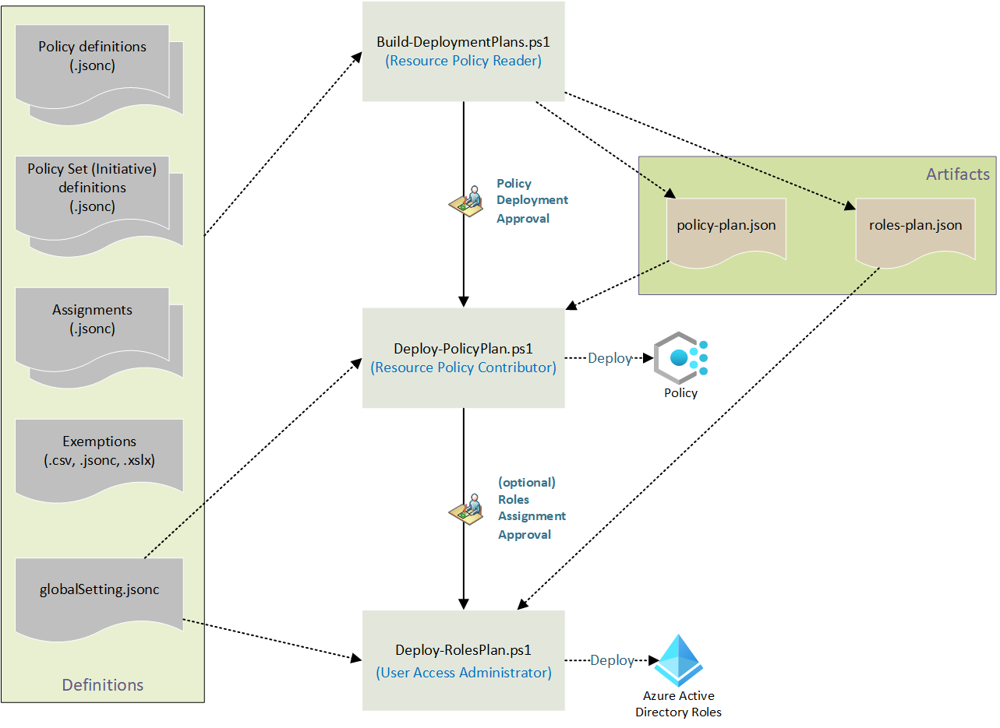

Home

Enterprise Azure Policy as Code (EPAC for short) is a number of PowerShell scripts which can be used in CI/CD based system or a semi-automated use to deploy Policies, Policy Sets, Policy Assignments, Policy Exemptions and Role Assignments. It also contains operational scripts to simplify operational tasks.
Latest Updates
📺 YouTube series for EPAC
Make sure you check out the series of videos explaining how to implement EPAC in your environment. New videos to be added soon!
v11.0.0 is Here!
- New modern look. Updated the output from the EPAC commands to look more modern and added accessibility features.
- Changes to support for Azure Lighthouse (see below)
- Changes to the ALZ sync process to support easier customization via a single file and not a forked repository
- Ignore archetypes
- Add custom management groups
- Add/Modify parameters for individual assignments
- Schema file for the structure file
Caution
Changes to Lighthouse deployments via EPAC in v11.0.0. Review the upcoming changes to avoid issues with your EPAC instance. The changes are documented here.
For all EPAC changes and newest updates, please visit our GitHub Releases Page.
Important
Starting with v8.0.0, Enterprise Policy as Code (EPAC) is tracking the usage using Customer Usage Attribution. In accordance with Microsoft's privacy policies, you have the right to opt-out of this tracking. Please review Telemetry below and Microsoft Privacy for more information.
Benefits of EPAC
- Single and multi-tenant policy deployment
- Easy CI/CD Integration with any CI/CD tool
- Extract existing Policy resources from an environment
- PowerShell Module or consume source code from GitHub
- Deployment scripts to deploy Policy resources and Role Assignments
- Deployments are sequenced based on the dependencies between the different Policy resources
- Operational scripts to simplify operational tasks
- Integration with Azure Landing Zone recommended policies
- Starter Kit with examples.
Caution
EPAC is a true desired state deployment technology. It takes possession of all Policy Resources at the deploymentRootScope and its children. It will delete any Policy resources not defined in the EPAC repo. This behavior can be modified as documented in the desired state strategy page.
Who Should use EPAC?
EPAC is designed for medium and large organizations with a larger number of Policies, Policy Sets and Assignments and/or complex deployment scenarios, such as, multiple tenants, multiple teams managing Policies.
Tip
EPAC provides a mature integration with Azure Landing Zones. Utilizing Azure Landing Zones together with EPAC is highly recommended.
Smaller Organizations
- While designed for medium and large Enterprises, EPAC can and should be used by small organizations implementing fully-automated DevOps deployments of every Azure resource (known as Infrastructure as Code). Your DevOps maturity level will be well suited for EPAC.
- If your DevOps (CI/CD) maturity is lower, Azure Landing Zones direct implementation of Policies might be a better choice.
- For extremely small Azure customers with one or two subscriptions Microsoft Defender for Cloud automated Policy Assignments for built-in Policies is sufficient.
Project Links
- GitHub Repo
- GitHub Issues
- Starter Kit
- Hydration Kit
- Enterprise Policy as Code PowerShell Module
- Azure Enterprise Policy as Code – A New Approach
- Azure Enterprise Policy as Code – Azure Landing Zones Integration
Deployment Scripts
Three deployment scripts plan a deployment, deploy Policy resources, and Role Assignments respectively as shown in the following diagram. The solution consumes definition files (JSON and/or CSV files). The planning script (Build-DeploymentPlans) creates plan files (policy-plan.json and roles-plan.json) to be consumed by the two deployment scripts (Deploy-PolicyPlan and Deploy-RolesPlan). The scripts require Reader, Resource Policy Contributor and Role Based Access Control Administrator privileges respectively as indicated in blue text in the diagram. The diagram also shows the usual approval gates after each step/script for prod deployments.

Operational Scripts
The solution contains operational scripts to manage Policy operations.
Enterprise Policy as Code, AzAdvertizer and AzGovViz
Enterprise Policy-as-Code (EPAC), AzAdvertizer and Azure Governance Visualizer (AzGovViz) are three distinct open source projects or tools internally developed and maintained by Microsoft employees, each helping address different needs in enterprise scale management and governance of Azure environments.
-
AzAdvertizer - AzAdvertizer is a publicly accessible web service that provides continually up-to-date insights on new releases and changes/updates for different Azure Governance capabilities such as Azure Policy's built-in policy and initiative (policy set) definitions, Azure aliases, Azure security & regulatory compliance controls, Azure RBAC built-in role definitions and Azure resource provider operations.
-
Azure Governance Visualizer (AzGovViz) - AzGovViz is an open source community project that provides visualization and reporting solution for any customer Azure environments, delivering a rich set of detailed insights covering tenant management group hierarchies, RBAC assignments, Azure policy assignments, Blueprints, Azure network topology and much more. AzGovViz is listed as recommended tool in use for both Microsoft Cloud Adoption Framework (CAF) and Microsoft Well Architected Framework (WAF).
-
Enterprise Policy-as-Code (EPAC) - EPAC is an open source community project that provides a CI/CD automation solution for the development, deployment, management and reporting of Azure policy at scale. EPAC can maintain a policy "desired state" to provide a high level of assurance in highly controlled and sensitive environments, and a means of managing policy exemptions. While it uses standard JSON file structure for its repositories, operation and maintenance of policy and policy sets can actually be done via CSV files, reducing the skill expertise needed to operate the solution once implemented.
Telemetry Tracking Using Customer Usage Attribution (PID)
Microsoft can identify the deployments of the Azure Resource Manager with the deployed Azure resources. Microsoft can correlate these resources used to support the deployments. Microsoft collects this information to provide the best experiences with their products and to operate their business. The telemetry is collected through customer usage attribution. The data is collected and governed by Microsoft's privacy policies; for details see Privacy at Microsoft.
Opt out of telemetry data collection telemetryOptOut
To opt-out of this tracking, we have included a setting in global-settings.jsonc called telemetryOptOut. If you would like to disable this tracking, then simply set this value to true (default is false).
If you are happy with leaving telemetry tracking enabled, no changes are required.
Module PID Value Mapping
The following is the unique IDs (also known as PIDs) used in each of the modules:
| Function Name | PID |
|---|---|
Build-DeploymentPlans |
3c88f740-55a8-4a96-9fba-30a81b52151a |
Deploy-PolicyPlan |
fe9ff1e8-5521-4b9d-ab1d-84e15447565e |
Deploy-RolesPlan |
cf031290-b7d4-48ef-9ff5-4dcd7bff8c6c |
Build-PolicyDocumentation |
2dc29bae-2448-4d7f-b911-418421e83900 |
New-AzRemediationTasks |
6f4dcbef-f6e2-4c29-ba2a-eef748d88157 |
Export-AzPolicyResources |
dc5b73fd-e93c-40ca-8fef-976762d1d30 |
Export-NonComplianceReports |
f464b017-898b-4156-9da5-af932831fa2f |
Get-AzExemptions |
3f02e7d5-1cf5-490a-a95c-3d49f0673093 |
New-AzPolicyReaderRole |
f4b5b7ac-70b4-40fc-836f-585791aa83e7 |
Sync-ALZPolicyFromLibrary |
adaa7564-1962-46e6-92b4-735e91f76d43 |
Support
Please raise issues via the GitHub repository using the templates provided.
Contributing
This project welcomes contributions and suggestions. Contributions require you to agree to a Contributor License Agreement (CLA) declaring that you have the right to, and actually do, grant us the rights to use your contribution. For details, visit https://cla.opensource.microsoft.com.
When you submit a pull request, a CLA bot will automatically determine whether you need to provide a CLA and decorate the PR appropriately (e.g., status check, comment). Simply follow the instructions provided by the bot. You will only need to do this once across all repos using our CLA.
This project has adopted the Microsoft Open Source Code of Conduct. For more information see the Code of Conduct FAQ or contact opencode@microsoft.com with any additional questions or comments.
Trademarks
This project may contain trademarks or logos for projects, products, or services. Authorized use of Microsoft trademarks or logos is subject to and must follow Microsoft's Trademark & Brand Guidelines. Use of Microsoft trademarks or logos in modified versions of this project must not cause confusion or imply Microsoft sponsorship. Any use of third-party trademarks or logos are subject to the third-party's policies.